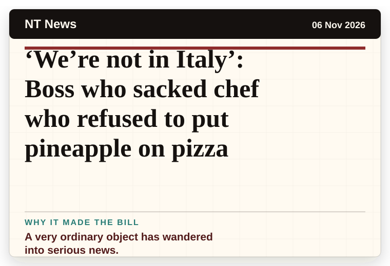
NT News
Australia
‘We’re not in Italy’: Boss who sacked chef who refused to put pineapple on pizza
A very ordinary object has wandered into serious news.
The latest daily picks, linked back to the original sources. Search the room, pick a source, or follow a headline out to the full story.
Record updated: 07 Nov 2026, 11:02 AM AEST
Showing 18 headline candidates from the refresh run completed on 07 Nov 2026, 11:02 AM AEST.

A very ordinary object has wandered into serious news.
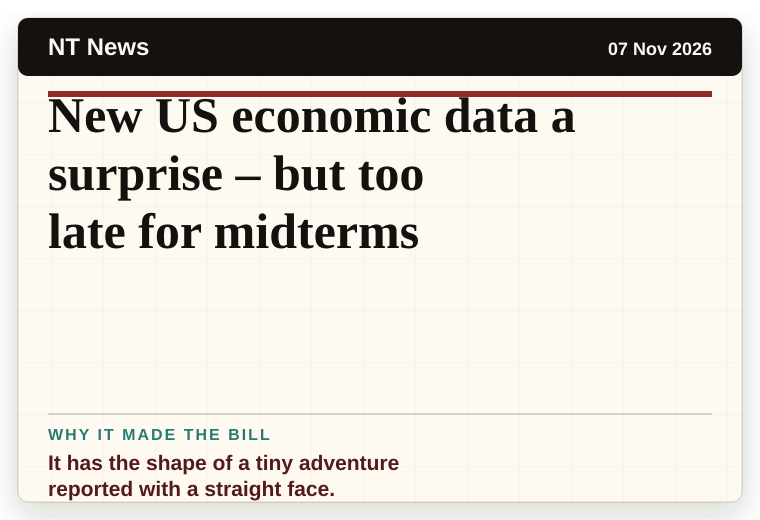
It has the shape of a tiny adventure reported with a straight face.

It reads like the setup to a very dry question.
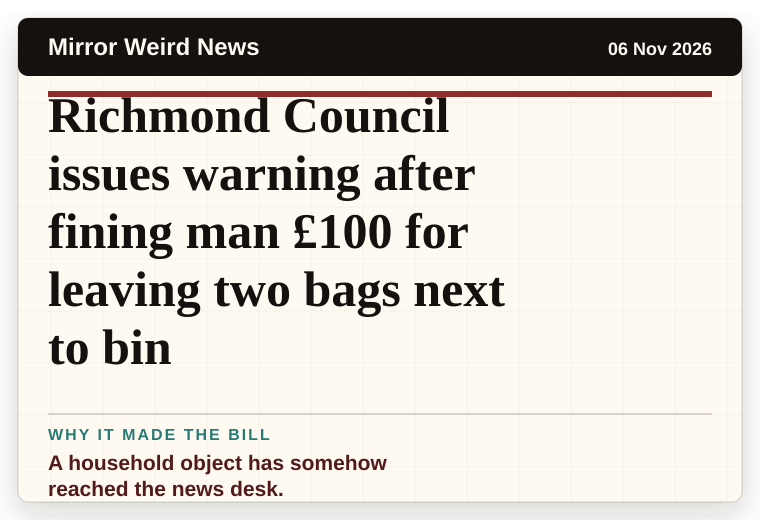
A household object has somehow reached the news desk.

A household object has somehow reached the news desk.

A wonderfully specific detail has taken centre stage.
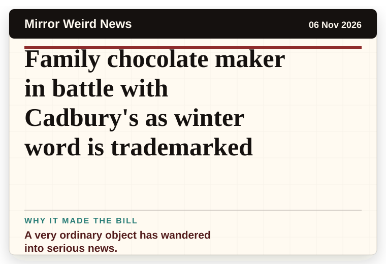
A very ordinary object has wandered into serious news.

The scale is doing deadpan comedy.

The scale is doing deadpan comedy.
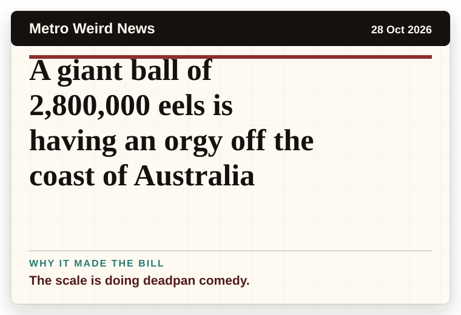
The scale is doing deadpan comedy.
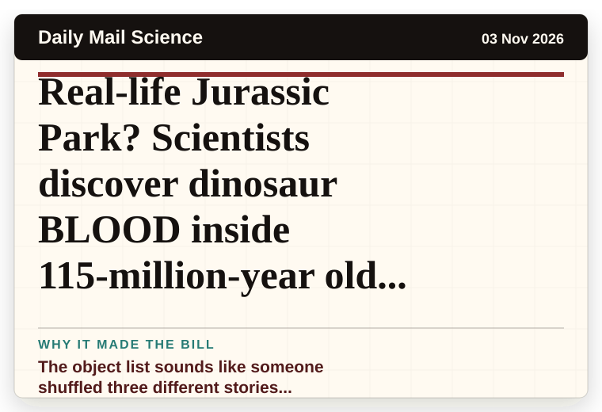
The object list sounds like someone shuffled three different stories together.

A wonderfully specific detail has taken centre stage.
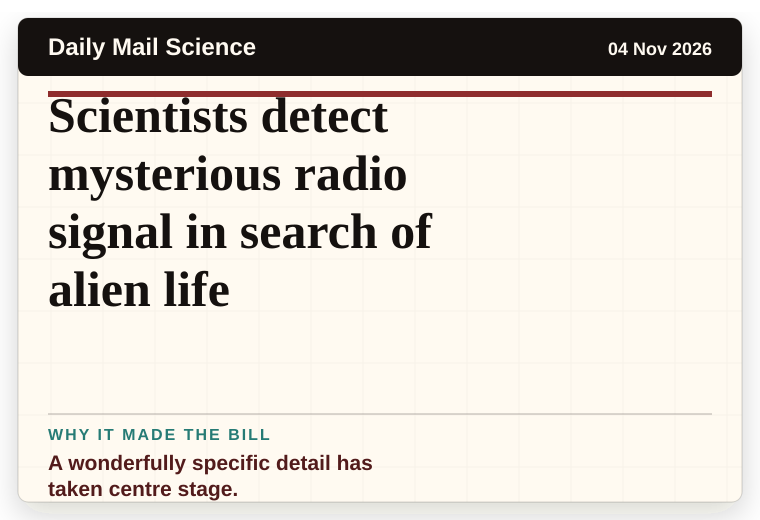
A wonderfully specific detail has taken centre stage.

The headline is already trying not to laugh.
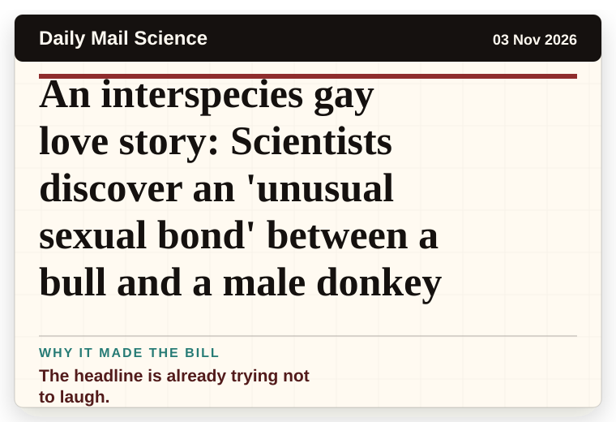
The headline is already trying not to laugh.
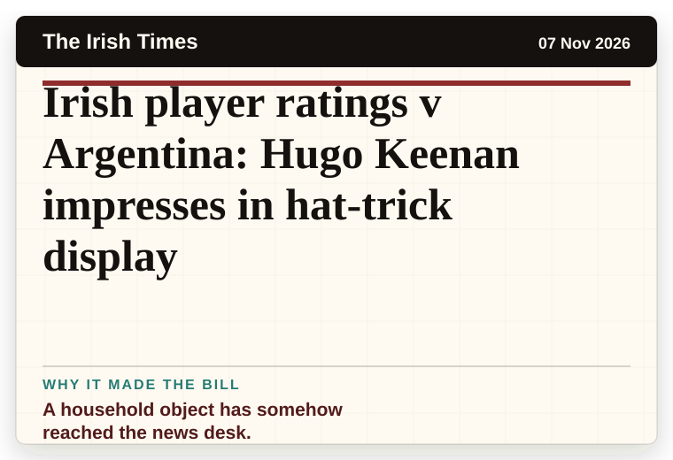
A household object has somehow reached the news desk.
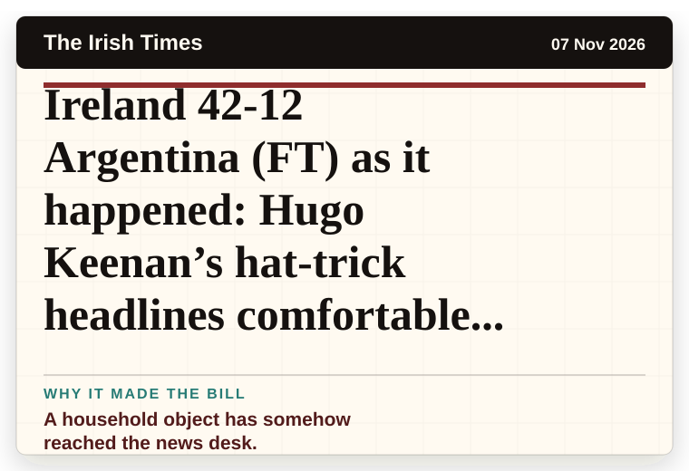
A household object has somehow reached the news desk.
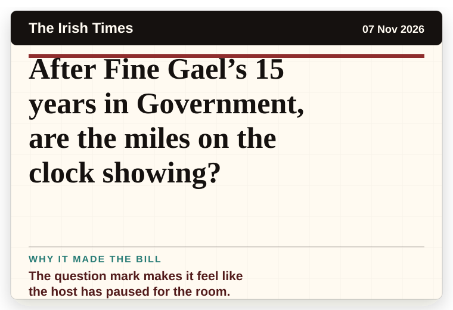
The question mark makes it feel like the host has paused for the room.